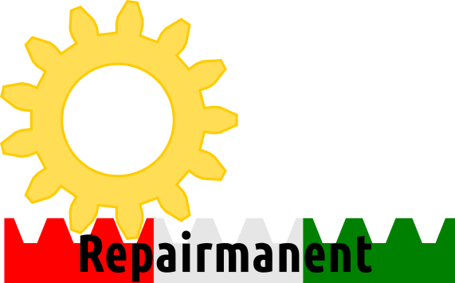

Bienvenue sur le site web
du Repairmanent !

Le Repairmanent est un repair-café qui se tient chaque 2ème et 4ème jeudi du mois de 16h à 20h, en partenariat avec Sens'Egaux, rue de la Côte 2a à Neuchâtel.
Prochaines dates :
- jeudi 13 novembre 2025
- jeudi 27 novembre 2025
- jeudi 11 décembre 2025
- jeudi 25 décembre 2025 (congé)
- jeudi 8 janvier 2026
Accès :
Voir une grande carte
N'hésitez pas à sonner. Un.e membre de l'association Sens'Egaux viendra vous ouvrir.
Le Repairmanent se tient au premier étage, autour d'une grande table au fond de l'atelier à droite en sortant de l'escalier.
Principes :
- Le Repairmanent n'est pas un service de réparation.
- Les participants réparent leurs objets avec l'assistance des bénévoles.
- Il n'est pas nécessaire de prendre rendez-vous. Les outils sont à disposition dès 16h. En cas de forte affluence, les bénévoles accompagnent les participants selon leur ordre d'arrivée.
- La participation est gratuite. Une cagnotte est à disposition des participants qui souhaitent soutenir le Repairmanent mais un don n'est pas obligatoire
- Les participants seront accompagnés même s'ils n'ont pas d'expérience technique.
- Les bénévoles ne réparent pas les objets hors de la présence des participants, sauf sur la proposition du bénévole.
- Si des pièces doivent être commandées par les bénévoles, une compensation correspondant aux frais pourra être demandée au participant.
- Les bénévoles peuvent refuser d'assister une réparation, en particulier si l'objet présente des risques pour son utilisation future.
- Il sera demandé aux participants de remplir une fiche d'inscription (PDF) :
- Des données statistiques pourront être transmises à la FRC concernant les type d'appareils réparés et le taux de réussite.
- Les données de contact des participants seront utilisées en cas de commande de pièces.
- Les participants qui le souhaitent peuvent choisir de s'inscrire à la lettre d'information de l'association Sens'Egaux.
Exemples d'objets pouvant être réparés :
- Petit électroménager : machine à café, mixeur, aspirateur, robot ménager, etc...
- Petits appareils électroniques : hauts-parleurs, platine disque, etc...
- Machine à coudre, si le problème est électrique ou mécanique. Pour l'utilisation de la machine, venir plutôt au Repair'Couture de Sens'Egaux.
Objets non pris en charge au Repairmanent :
- Vélos : le Black Office vous accueille les mercredis et samedis.
- Vêtements et textiles : Sens'Egaux vous accueille le vendredi entre 14h et 18h pour un atelier Repair'Couture. Les horaires des ateliers sont disponibles sous https://sens-egaux.ch/activites/ateliers/
- Cuir : Sens'Egaux peut vous accueillir le mardi entre 16h30 et 19h30 pour un atelier Repair'Cuir. Sur inscription.
- Ordinateurs et téléphones portables : plusieurs boutiques peuvent vous offir un service de réparation. Le Club Informatique de Neuchâtel peut aider pour des soucis d'utilisation.
Contact :
- Pour tout renseignement, merci d'utiliser l'adresse : contact@repairmanent.example.ch
- L'équipe du Repairmanent est bénévole, merci d'être patient si notre réponse devait tarder.
Liens :
- Merci de consulter notre page sur l'annuaire FRC pour toutes les dates du Repairmanent, ou d'un autre repair-café plus proche de vous.
- Le Black Office est un atelier d'auto-réparation de vélos qui peut vous accueillir les mercredis de 17h à 20h ainsi que les samedis de 14h à 17h.
- L'association Sens'Egaux est un espace d’expression, de (co)création et de partage de savoir-faire, qui est le partenaire du Repairmanent et l'accueille gracieusement dans ses locaux.
- Le Fablab Neuchâtel est ouvert à celles et ceux qui souhaitent utiliser l'impression 3D ou la découpe laser pour fabriquer des pièces nécessaires à la réparation.
- Le Club Informatique de Neuchâtel peut aider propose des ressources pour les utilisateurs d'ordinateurs et de smartphones.
- L'Eco-débarras de Corcelles-Cormondrèche peut vous permettre d'offir une deuxième vie à des objets fonctionnels que vous n'utilisez plus.
- Le SEL La Chaux-de-Fonds organise un Repair-Café le dimanche 9 novembre 2025, de 11h à 15h30, à la rue de la Serre 12.
Dates 2025-2026
- jeudi 11 septembre 2025
- jeudi 25 septembre 2025
- jeudi 9 octobre 2025
- jeudi 23 octobre 2025
- jeudi 13 novembre 2025
- jeudi 27 novembre 2025
- jeudi 11 décembre 2025
- jeudi 25 décembre 2025 (congé)
- jeudi 8 janvier 2026
- jeudi 22 janvier 2026
- jeudi 12 février 2026
- jeudi 26 février 2026
- jeudi 12 mars 2026
- jeudi 26 mars 2026
- jeudi 9 avril 2026
- jeudi 23 avril 2026
- jeudi 14 mai 2026 (férié)
- jeudi 28 mai 2026
- jeudi 11 juin 2026
- jeudi 25 juin 2026
- jeudi 9 juillet 2026
- jeudi 23 juillet 2026 (congé)
- jeudi 13 août 2026
- jeudi 27 août 2026
- jeudi 10 septembre 2026
- jeudi 24 septembre 2026
- jeudi 8 octobre 2026
- jeudi 22 octobre 2026
- jeudi 12 novembre 2026
- jeudi 26 novembre 2026
- jeudi 10 décembre 2026
- jeudi 24 décembre 2026 (congé)